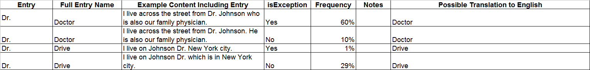

ULI
Translation Guidelines
Version: 0.0
Date: 6 June 2013
The purpose of this document is to describe how the ULI
(Unicode Localization Data Interoperability Technical Committee)
sentence segmentation data spreadsheet is structured.
There are seven fields per entry,
- Entry: the entry as entered in context. Case is
currently ignored. If an Entry has “a.m. ; A.M.” please remove
one variant or split it into two rows.
- Full entry name: fully spelled out representation of
the entry, if different. May be identical to Entry.
- Example content including entry: An example of real
content when the entry is used within context
- isException: whether or not that usage represents an
override to UAX#29 (see http://www.unicode.org/reports/tr29/
for more details)
- Frequency: the likelihood of the entry of expected
segmentation behavior occurring within the context
- Notes: comments regarding the entry of expected
segmentation behavior
- Possible translations to English: all possible
translations of the entry to English within context
For example, in English, we have four distinct entries for
“Dr.”:

All rows with the identical “Entry” should add up to
100%.
If only a single value for isException is given (i.e. all Yes
or all No), the complementary percentage is assumed for the
complementary isException value.
For example, “20% Yes” implies 80% No, “10% No” implies 90%
Yes. “30% Yes / 40% Yes” implies 30% No.
It is an error to have both Yes and No and not explicitly
specify 100% of the cases.